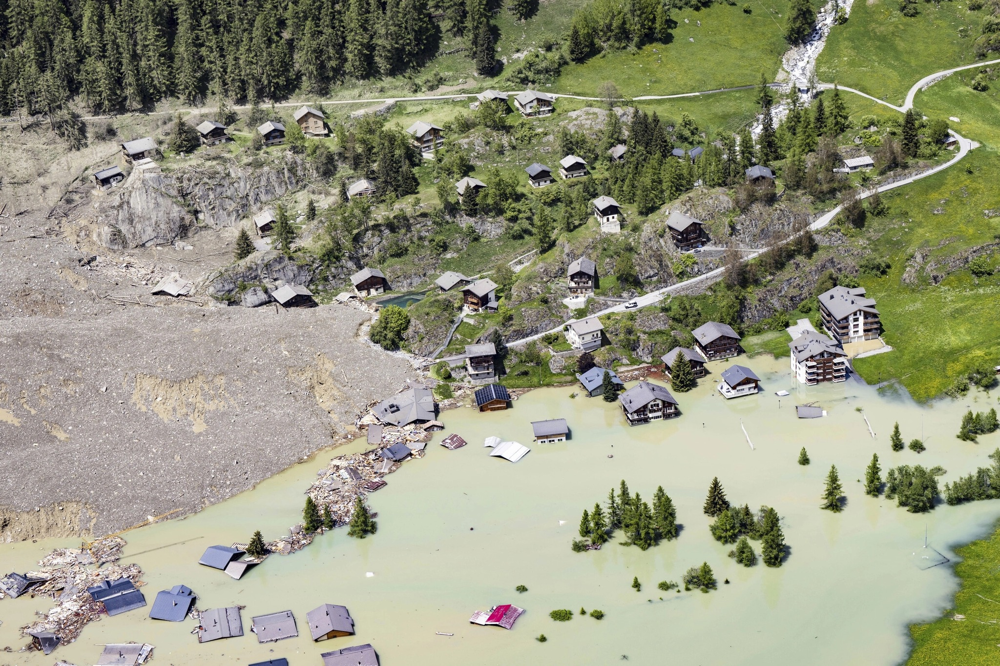
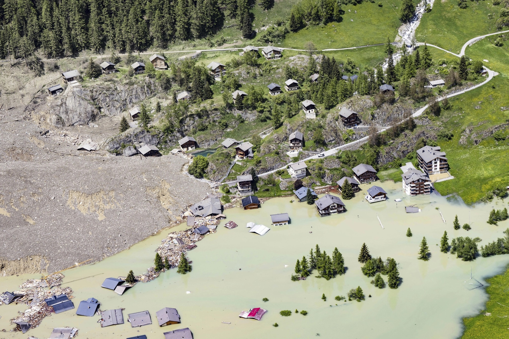

Nhà đẹp Hà Nội
Khi bạn sống chậm lại, từng nhịp thở cũng mang ý nghĩa. Một tách cà phê đậm đà, một ánh mắt nồng ấm, hay chỉ là phút giây ngồi lặng yên nghe tiếng gió. Tất cả đều là những điều giản dị nhưng đầy giá trị, chỉ cần bạn đủ tĩnh lặng để cảm nhận. An yên không phải là sự tĩnh lặng tuyệt đối, mà là biết mỉm cười dù trong lòng vẫn còn gió nổi.
!!Thụy Sỹ
 

Thuỵ Sĩ: Cả ngôi làng bị chôn vùi, phá hủy trong chớp mắt vì sông băng tan chảy, tạo thành lũ bùn.
Xem chi tiết